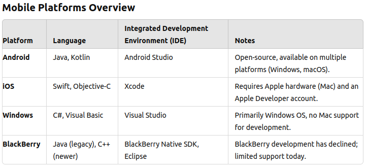
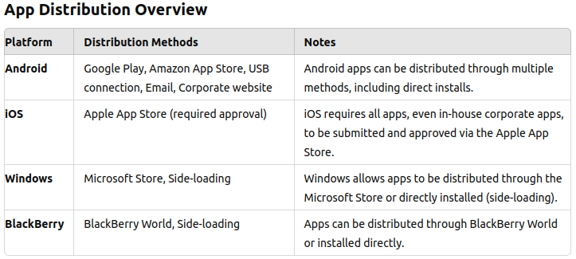
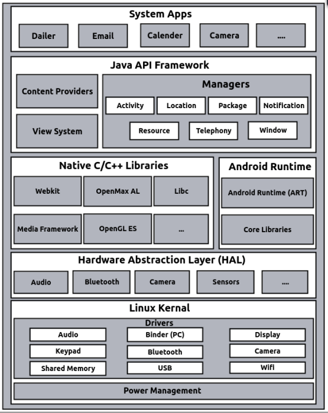
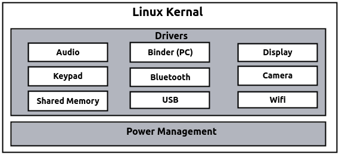
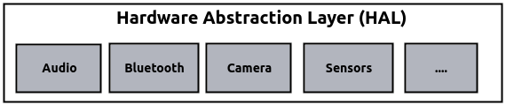
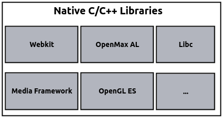
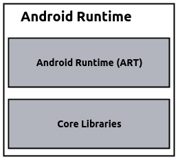
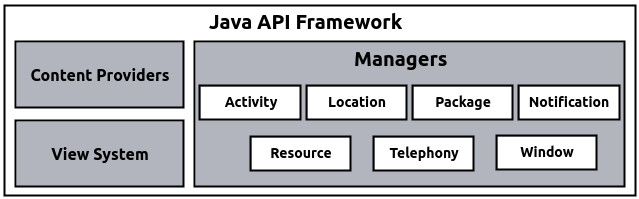
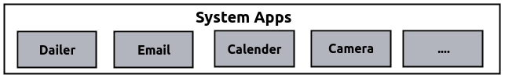
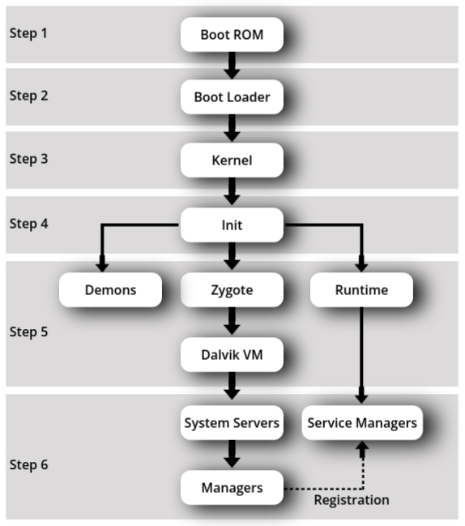

Introduction to Mobile Platforms
Mobile platforms are the operating systems that run on smartphones and other mobile devices. Each platform has its own unique features, development environment, and programming languages. Some of the most common mobile platforms include Android, iOS, Windows, and BlackBerry. Each platform requires different tools and languages for app development, and some are open to all developers, while others have restrictions such as requiring specific hardware or accounts.
App Distribution Methods
Different mobile platforms provide various ways to distribute applications. Some platforms have strict requirements, like needing to submit apps to an official app store, while others allow more flexible distribution methods such as through corporate websites or direct installation via USB.
History of Android
Android is an open-source mobile operating system built on the Linux kernel. It was mainly developed for devices like smartphones and tablets. Since its launch, it has become the most popular mobile operating system worldwide. Let’s look at what Android is and how it all started.
What is Android?
Android is an operating system created by Google, designed for mobile devices. It allows developers to make apps that can run on different types of hardware without needing to know the specifics of each device. Its flexibility, open nature, and easy-to-use tools have made it a popular choice.
- Open Source: Android is open-source, meaning anyone can use or change its code for free.
- Linux-Based: It is built on the Linux kernel, which helps it manage hardware and run software efficiently.
- Customizable: Device makers can modify the operating system to match their devices and create their own user experiences.
How Android Started
Android Inc. was founded in 2003 by Andy Rubin, Rich Miner, Nick Sears, and Chris White. Initially, it was meant to power digital cameras, but they soon shifted their focus to making it a mobile phone operating system.
- 2005 Acquisition by Google: In 2005, Google bought Android Inc. and continued its development, seeing its potential for mobile phones.
- Open Handset Alliance (OHA): In 2007, Google formed the Open Handset Alliance (OHA), a group of tech companies working together to develop Android as an open platform for mobile devices.
- First Android Device: The first Android phone, the HTC Dream (also called T-Mobile G1), was released in 2008, marking the start of Android’s success in the smartphone world.
Open Handset Alliance (OHA)
The Open Handset Alliance (OHA) is a group of 84 technology companies, including Google, Intel, Dell, HTC, and China Mobile. This group was created to work together to improve mobile technology and promote Android as a free and open platform.
- Founded by Google: Google led the creation of the OHA, officially forming it on November 5, 2007.
- Mission: The OHA aims to speed up innovation in mobile phones and provide users with a better and more affordable mobile experience.
- Developers of Android: The OHA developed Android, the first complete, open, and free platform for mobile devices.
- Google’s Leadership: Google plays a leading role in the OHA, guiding its efforts to push Android forward as the ‘captain’ of the alliance.
Android Development Methods
When developing Android applications, there are different types of apps that you can create depending on your needs and goals. These include native apps, pure web apps, and hybrid apps. Each type has its own characteristics, advantages, and limitations.
1: Native Apps
Native apps are built specifically for a platform using the platform’s supported languages and tools. For Android, this means using Java or Kotlin and Android Studio. They offer the best performance and user experience.
- Characteristics:
- Performance: Provides the best performance and responsiveness.
- Access to Features: Full access to device features such as the camera, GPS, and sensors.
- Platform-Specific: Developed specifically for one platform. Native apps can only generate an installer (package) for their own platform.
- Development Tools:
- iOS: Xcode, Swift, Objective-C
- Android: Android Studio, Java/Kotlin
- Windows: Visual Studio, C#
- Examples:
- Google Maps: Offers advanced mapping and navigation features tailored to Android.
- Settings: A system app providing access to device settings and configurations.
2: Pure Web Apps
Pure web apps are essentially websites designed to be accessed via a mobile browser. They do not require installation on the device and rely on universal access through web browsers.
- Characteristics:
- Installation: No need for installation; accessed through a web browser.
- Limitations: Cannot access mobile hardware features like GPS, camera, and touch sensors.
- Automatic Updates: Since content comes from the server, updates are automatically applied.
- Universal Access: Works across different platforms as long as the browser is compatible.
- Development Language:
- HTML, CSS, JavaScript
- Examples:
- Facebook Mobile Website: Provides a basic version of the social media site through a browser.
- Online Banking Sites: Accessible via the browser for managing financial transactions without app installation.
3: Hybrid Apps
Hybrid apps combine web technologies (HTML, CSS, JavaScript) with a native container that allows them to be installed like native apps. They offer a blend of both web app flexibility and native app access to device features.
- Characteristics:
- Cross-Platform: Can be used across multiple platforms with minimal changes.
- Access to Features: Some access to device features through a thin native container.
- Development Efficiency: Faster development compared to fully native apps by reusing code across platforms.
- Development Environments:
- Cordova, Xamarin (C#, Microsoft)
- Ionic Framework (powered by Cordova)
- Appcelerator Titanium, Sencha
- Examples:
- Uber: Ride-sharing app that uses native features like GPS and integrates web technologies for the user interface.
- Pinterest: Visual discovery app that blends native and web technologies to offer a responsive interface.
- eBay: E-commerce app using web technologies for product listings combined with native performance for user interactions.
Factors to be Considered for Development
When developing mobile applications, several factors must be considered to ensure that the app performs well and provides a great user experience across different devices and environments. These factors include device fragmentation, screen size, screen density, user interaction methods, computing power, memory, and battery capacity.
1: Device Fragmentation
The mobile ecosystem is highly fragmented, with various platforms like Android, iOS, Windows, and BlackBerry, each with its own versions and specifications. This presents a challenge for developers as they must ensure compatibility and functionality across a wide range of devices and operating systems.
- Platform Variability: Developers need to handle differences in operating systems and versions that are continually evolving.
- Device Compatibility: Ensuring consistent app behavior on devices with varying capabilities, screen sizes, and hardware configurations.
2: Screen Size
Mobile devices come in various screen sizes, from small smartphones to large tablets. Designing for smaller screens requires simplifying the layout and focusing on key functionalities while maintaining usability.
- Responsive Design: UI elements must adapt to different screen sizes for an optimal user experience.
- Streamlined Navigation: Mobile design prioritizes simplicity, minimizing unnecessary tabs and options, unlike desktop applications, which may use extensive menus and toolbars.
- Challenges: Ensuring that an application is optimized for different devices with various screen densities and sizes can be complex.
3: Screen Density
Screen density refers to the number of pixels per inch (PPI) on a display. Different devices have varying screen densities, so developers need to ensure that images and other graphical elements look sharp and clear across devices.
- Support for Multiple Densities: High-resolution graphics are necessary to support devices with higher screen densities.
- Scalable UI Elements: Icons, fonts, and other elements should be scalable without losing quality.
4: User Interaction
Mobile devices support different types of user interaction, from mouse and keyboard to touch and sensor-based input. Designing for touch and gesture-based interactions can involve multiple actions such as single taps, double taps, long touches, and more.
- Mouse & Keyboard: Primarily used in desktop environments or on devices with attached keyboards.
- Touch: The dominant interaction method for smartphones and tablets. Gestures like swiping, pinching, and tapping provide more dynamic interaction options.
- Sensor-Based: Devices come equipped with various sensors like accelerometers, gyroscopes, and GPS, enabling features like auto-rotation, gesture recognition, and location-based services.
5: Computing & Memory Capacity
Mobile devices generally have less computing power and memory capacity compared to desktops and servers. Developers must optimize their applications to run smoothly within these limitations.
- Efficient Algorithms: Developers need to create optimized code to handle the limited computing power and memory of mobile devices.
- Memory Management: Apps must manage memory efficiently to avoid crashes or slowdowns, especially on lower-end devices.
6: Battery Capacity
Battery life is a critical factor for mobile devices, as complex or poorly optimized apps can quickly drain battery power. Unlike enterprise systems, where power isn't a concern, mobile apps must be designed with energy efficiency in mind.
- Battery-Efficient Algorithms: Developers should design algorithms and code that minimize battery usage.
- Optimized Processes: Reduce background processes and unnecessary resource use to preserve battery life.
Android SDK & Native Android Applications
The Android SDK (Software Development Kit) is a toolkit designed to help developers build, test, and deploy Android applications. It provides a range of components, including libraries, emulators, and debugging tools, that make the development process efficient and effective. Native Android apps, which are built using this SDK, are optimized specifically for the Android platform, ensuring high performance and access to all device features.
1: What is Android SDK?
The Android SDK is a collection of tools and resources that developers use to create Android applications. It provides essential libraries, tools for testing, and APIs that simplify the development process and allow apps to interact with the Android operating system.
- Key Components:
- Libraries: Pre-written code for tasks like handling graphics, databases, and network operations.
- Emulator: A virtual device that allows developers to test apps without needing physical hardware.
- Debugger: A tool to find and fix code errors.
- Build Tools: Used to compile and package the app into an APK file for installation.
- Development Environment: Android SDK integrates with Android Studio, the official IDE for Android app development, making it easier to build, test, and debug apps.
2: Native Android Applications
Native Android applications are developed using the Android SDK, specifically for Android devices. These apps are written in languages like Java and Kotlin and can take full advantage of the device's capabilities, offering smooth performance and access to Android’s built-in features.
- Common Examples:
- Email clients
- SMS management apps
- Personal Information Management (PIM) tools
- A WebKit-based browser
- Music players and photo galleries
- Camera and recording apps
- Calculators
- Home screen launchers
- Alarm clocks
- Google apps like Google Maps and YouTube
- Why Choose Native Apps?
- Best performance, as they are optimized for Android devices.
- Full access to device features like GPS, sensors, and the camera.
- Consistent user experience by following Android design principles.
- Development Tools:
- Android Studio: The official Integrated Development Environment (IDE) for Android development.
- Languages: Java or Kotlin is used for building native Android applications.
3: Benefits of Using Android SDK
The Android SDK offers a rich set of tools and resources that help developers create high-quality Android apps quickly and efficiently.
- Pre-built libraries and APIs simplify app development.
- The emulator allows for easy testing on virtual devices, reducing the need for physical hardware.
- Integrated debugging tools help quickly identify and fix bugs.
- Efficient development and deployment through Android Studio.
Android Architecture
Android architecture is the structure of the Android operating system, designed to support a variety of applications and services. It is built on a Linux kernel and consists of several layers that work together to handle different functions of the system and apps.
Linux Kernel
The Linux kernel is the core of the Android operating system. It is not just a standard Linux OS but is tailored for Android devices, acting as a layer between the hardware and software.
- Role: Provides essential functions and services to manage the device.
- Key Functions:
- Security: Ensures that data and operations are protected.
- Memory Management: Manages the device's memory allocation.
- Process Management: Handles running processes and tasks.
- Network Stack: Manages network connections and communication.
- Driver Model: Controls hardware components such as audio, display, and more.
- Drivers: Special programs that control and communicate with hardware components. Examples
include:
- Audio: Manages sound output and input.
- Binder: Handles communication between different apps and processes.
- Display: Controls what is shown on the screen.
- Keypad: Manages input from physical and virtual keyboards.
- Bluetooth: Handles wireless communication with other devices.
- Camera: Manages the device's camera functions.
- Shared Memory: Allows different processes to access common data.
- USB: Manages connections to USB devices.
- Wi-Fi: Handles wireless network connections.
- Power Management: Manages how the device uses and conserves battery power.
Hardware Abstraction Layer (HAL)
The Hardware Abstraction Layer (HAL) sits just above the Linux kernel and provides a standard interface for hardware components. It helps the Android system communicate with different hardware without needing specific drivers for each device.
- Role: Acts as an interface between the hardware and the higher-level software.
- Purpose: Allows Android to support a wide range of hardware by providing a consistent API.
- Components: Includes drivers for various hardware such as audio, camera, and sensors.
Libraries
These libraries are written in C/C++ and operate in the background of the system, providing essential functions and performance optimizations specifically for Android's embedded Linux environment.
- Function: Supports various system and application functions efficiently.
- Examples:
- WebKit: A web engine for rendering web pages.
- OpenMAX AL: A multimedia library for audio and video processing.
- libc: The standard C library for basic functions.
- Media Framework: Handles media playback and recording.
- OpenGL ES: Provides graphics rendering capabilities.
Android Runtime
The Android Runtime (ART) is crucial for running Android applications. It replaces the older Dalvik VM, offering improved performance and efficiency.
- ART (Android Runtime): Executes app code and provides runtime services.
- Dalvik Virtual Machine: The previous runtime environment for Android apps. It was register-based and executed files in the Dalvik Executable (.dex) format.
- Core Libraries: Provide fundamental Java functionalities for app development.
- Note: Each Android app runs in its own process with a separate instance of the runtime for better security and stability.
Java API Framework
This layer simplifies app development by providing APIs that allow apps to interact with system services and components.
- Purpose: Makes it easier to reuse and integrate components across different apps.
- Key Components:
- View System: Manages user interface elements and interactions.
- Content Providers: Allow apps to access and share data with other apps.
- Resource Manager: Manages app resources like strings, layouts, and images.
- Managers: Provide various system services such as activity management and notifications.
Application Layer
The top layer includes both system apps and third-party apps. System apps are pre-installed and provide basic functions for the device.
- System Apps: Core applications that come with the Android platform, written in Java.
Examples include:
- Email Client: Manages email communications.
- SMS Program: Handles text messaging.
- Calendar: Manages events and schedules.
- Maps: Provides navigation and location services.
- Browser: Allows web browsing.
- Contacts: Manages contact information.
- And Others: Additional apps that provide essential functions.
- Note: Third-party applications operate at the same level as these system apps and can utilize similar system services and resources.
Android - Application Components
In Android, an application is composed of several key components that work together to create a functional and interactive app. These components manage different aspects of the application’s behavior and interaction with users and other apps.
1: Activities
Activities represent a single screen with a user interface. They are crucial for interacting with users and are often considered the entry points of an application.
- Purpose: Display UI elements and handle user interactions.
- Example: A settings screen or a login page.
- Lifecycle: Activities go through various states such as created, started, resumed, paused, stopped, and destroyed.
2: Services
Services run in the background to perform long-running operations or tasks without user interaction. They continue to run even if the user switches to another app.
- Purpose: Handle tasks like playing music, performing network operations, or handling system-level functions.
- Example: A music player that continues playing audio in the background.
- Types: Foreground services (display notifications to keep the user informed) and background services (perform tasks without user visibility).
3: Broadcast Receivers
Broadcast receivers listen for and respond to system-wide broadcast announcements or events. They handle events such as incoming calls or system changes.
- Purpose: React to system-wide events or messages, such as network connectivity changes or battery low warnings.
- Example: A receiver that listens for changes in network connectivity and updates the app’s UI accordingly.
- Usage: Implemented by extending the BroadcastReceiver class and registering intents in the manifest or at runtime.
4: Content Providers
Content providers manage and share app data with other applications. They provide a standard interface for data access and manipulation across different apps.
- Purpose: Facilitate data sharing and querying between different apps and manage data storage.
- Example: Contacts provider that allows apps to access and modify the user’s contact information.
- Usage: Implemented by extending the ContentProvider class and defining URIs for accessing data.
Additional Components
Besides the main components, there are other essential elements in Android applications that enhance functionality and user experience.
- Views: Basic building blocks for UI elements like buttons, text fields, and images. They are used to display content and handle user interactions.
- Fragments: Reusable portions of an activity’s UI that can be combined to create a flexible and dynamic user interface.
- Layouts: Define the structure and arrangement of UI elements on the screen. Examples include LinearLayout and RelativeLayout.
- Intents: Messages used to request actions from other components or apps. They can be used to start activities, services, or deliver broadcasts.
- Resources: Assets such as strings, images, and layouts that are used by the application. They are defined in XML files in the res directory.
- Manifest: The AndroidManifest.xml file contains essential information about the app, such as its components, permissions, and configuration details.
Android Studio
Android Studio is the official Integrated Development Environment (IDE) for Android development. It provides a comprehensive set of tools for building Android applications. In this topic, we will use Java as the programming language for our projects, not Kotlin. Below is an overview of the typical folder structure in an Android project and the files contained within each folder.
Android Folder Structure
- app 📁
- manifests 📁
- AndroidManifest.xml 📄
- java 📁
- com.example.appname 📁
- MainActivity.java 📄
- com.example.appname 📁
- res 📁
- drawable 📁
- Icons, images, and other drawable resources 📄
- layout 📁
- activity_main.xml 📄
- mipmap 📁
- Launcher icons of different sizes 📄
- values 📁
- strings.xml 📄
- colors.xml 📄
- styles.xml 📄
- drawable 📁
- res (generated) 📁
- R.java 📄 (generated resource IDs)
- gradle scripts 📁
- build.gradle (Project-level) 📄
- build.gradle (Module-level) 📄
- manifests 📁
In an Android project, the folder structure plays a crucial role in organizing the various components and resources needed for development. Understanding this structure helps in navigating the project and managing the different elements effectively. Below is a detailed explanation of the key folders in an Android project.
1: Android Manifest Folder
The manifests 📁 folder contains important configuration files for the Android app.
- AndroidManifest.xml 📄
This is the main configuration file for the Android application. It defines essential information about the app, including:
- Application components (activities, services, broadcast receivers, and content providers).
- Permissions required by the app.
- Application metadata and features.
- Application theme and settings.
Note: The manifest file outlines the structure and metadata of the app, specifying its components and requirements.
2: Android Java Folder
The java 📁 folder contains Java source code files for the application.
- com.example.appname 📁
This package directory holds Java classes and source code for the app. It typically includes:
- MainActivity.java 📄
This is the main activity file where the primary code for the application’s main screen is written. It contains the logic for the UI and interacts with other components of the app.
Note: This folder includes Java source code files, organized by package names, and also contains test code.
- MainActivity.java 📄
3: Res Folder
The res 📁 folder contains all the resources for the application. These are non-code files used in the app, such as:
- drawable 📁
Holds drawable resources like icons and images used in the app.
- layout 📁
Contains XML files that define the layout of the application's user interface. For example:
- activity_main.xml 📄 - Defines the layout for the main activity.
- mipmap 📁
Stores launcher icons of different sizes to ensure the app icon displays correctly on various devices.
- values 📁
Contains XML files for defining values used throughout the app. These include:
- strings.xml 📄 - Stores string resources.
- colors.xml 📄 - Defines color resources used in the app.
- styles.xml 📄 - Contains style definitions for UI elements.
Note: This folder contains all non-code resources such as XML layouts, UI strings, and bitmap images, organized into corresponding sub-directories.
4: Gradle Folder
The gradle scripts 📁 folder contains Gradle build scripts used for managing the build process of the application.
- build.gradle (Project-level) 📄
This script configures settings that apply to the entire project, such as repositories and dependencies shared across modules.
- build.gradle (Module-level) 📄
This script is specific to each module and configures settings like compile SDK version, dependencies for the module, and build types.
Note: Gradle is an open-source build system used to automate building, testing, and deployment. It defines module-specific build configurations and allows you to add necessary dependencies for your Android application.
Understanding Android Runtime
The Android Runtime (ART) is a crucial part of the Android operating system responsible for executing applications. Initially, Android used the Dalvik Virtual Machine (DVM), but transitioned to ART to enhance performance and efficiency. This section explores the Android Runtime, compares it with the Java Virtual Machine (JVM), and explains the differences and reasons for these changes.
1. Overview of Android Runtime
Android Runtime enables the execution of Android applications by providing a runtime environment. ART replaced DVM to improve overall performance and battery efficiency. This section provides an overview of ART and its key features.
2. Dalvik Virtual Machine (DVM)
The Dalvik Virtual Machine (DVM) was the initial runtime environment used by Android to execute applications. It was designed specifically for mobile devices with limited resources.
- Characteristics:
- Register-Based Model: DVM uses a register-based architecture, which is more memory-efficient compared to the stack-based model used by JVM.
- Dalvik Bytecode: Executes Dalvik Executable (.dex) files. Each Android application runs in its own process with a dedicated instance of DVM.
- Memory Efficiency: Designed for low-memory devices, allowing multiple instances of DVM to run efficiently.
- JIT Compiler: From Android 2.2, DVM included a Just-In-Time (JIT) compiler that compiles bytecode into machine code at runtime to improve performance.
3. Android Runtime (ART)
ART replaced DVM starting from Android 4.4 (KitKat) to address performance and efficiency issues, providing a more robust runtime environment.
- Characteristics:
- AOT Compiler: ART uses Ahead-Of-Time (AOT) compilation, converting bytecode into machine code during the build process. This results in faster app startup times and improved runtime performance.
- Battery Performance: ART enhances battery life by reducing the need for frequent JIT compilation, which is resource-intensive.
- Garbage Collection: ART offers more efficient garbage collection compared to DVM, leading to better memory management.
- Storage & Boot Time: ART requires more storage and results in longer boot times as it builds a cache during the first boot.
4. JVM vs. DVM
Comparing the Java Virtual Machine (JVM) with the Dalvik Virtual Machine (DVM) helps understand why Android switched from DVM to ART and the differences in their architectures.
- JVM (Java Virtual Machine):
- Stack-Based Model: JVM uses a stack-based architecture, which requires more memory and is slower compared to DVM's register-based model.
- Bytecode Execution: Executes Java bytecode (.class files) and is platform-independent, supporting multiple operating systems.
- Single Instance: Typically, a single JVM instance is shared among multiple applications.
- Process: Java source code → Javac → Bytecode → JVM → Machine code
- DVM (Dalvik Virtual Machine):
- Register-Based Model: More memory-efficient and faster for mobile devices with limited resources.
- Dalvik Bytecode: Executes .dex files specific to Android, optimized for low-power devices.
- Multiple Instances: Allows multiple instances of DVM to run efficiently, each handling its own application.
- Process: Android source code → Javac → Bytecode → Dex compiler (dex tool) → Dalvik Bytecode (.dex file) → DVM → Machine code
5. JIT vs. AOT Compilation
JIT and AOT compilation are methods used to improve application performance, operating at different stages of the development process.
- JIT (Just-In-Time) Compilation:
- Runtime Compilation: JIT compiles bytecode into machine code at runtime, enhancing performance but consuming more resources during execution.
- AOT (Ahead-Of-Time) Compilation:
- Build-Time Compilation: AOT compiles code during the build process, leading to faster app startup times and better runtime performance.
6. ART vs. DVM
ART and DVM have different impacts on performance and system resources. This section compares ART and DVM based on several factors:
- Battery Performance: ART improves battery life compared to DVM by reducing the need for frequent JIT compilation.
- Storage: DVM is more suitable for devices with low storage due to its less resource-intensive nature.
- Boot Time: ART results in longer boot times as it builds a cache during the first boot, which can be a trade-off for improved performance.
- Application Launch Time: DVM has a slower launch time for applications compared to ART, which benefits from AOT compilation.
- Garbage Collection: ART has more efficient garbage collection, leading to better memory management compared to DVM.
The transition from DVM to ART represents a significant enhancement in the Android runtime environment. ART's advanced features, including AOT compilation and improved garbage collection, address the limitations of DVM, resulting in better performance, efficiency, and battery life for Android devices.
Android Boot Process
Android, like any operating system, goes through a series of steps to start up the device and make the system ready for user interaction. These steps are crucial to initialize hardware, system services, and load the core framework that supports Android applications. Below, we will explain each stage in detail:
1. Boot ROM
- When you press the power button, the device hardware (like the CPU) receives power.
- Boot ROM is the first component that runs, which is part of the hardware itself.
- Its job is to load the bootloader into RAM (the device’s main memory) from a fixed location (often the internal storage).
- This step is critical as it kicks off the entire boot process by giving the system a way to start executing the bootloader.
2. Bootloader
- Once the bootloader is loaded into RAM, it starts executing.
- The bootloader works in two stages:
- Stage 1: It detects the external RAM (device memory) and ensures that the system has enough memory to continue. It also prepares the system for the next steps.
- Stage 2: In this stage, the bootloader sets up important parts of the system, such as network configurations and memory allocation.
3. Kernel
- The bootloader then hands over control to the Linux Kernel, which is the core of the Android operating system.
- The kernel is responsible for:
- Setting up cache and protected memory areas.
- Initializing input/output (I/O) systems, such as touchscreens, USB, and Wi-Fi.
- Loading device drivers (for hardware like the camera, audio, etc.).
- Starting essential system processes, called daemons (background services that keep the system running).
- The kernel then searches for the first system process called init.
4. Init Process
- Init is the first process started by the kernel.
- Its role is to mount key system directories, such as:
/sys- contains system configuration files./dev- contains device files representing hardware components./proc- contains process information.- The init process also runs an init.rc script, which sets up system properties and triggers the Zygote process (which handles app management).
5. Zygote
- Zygote is a critical process that helps Android manage applications more efficiently.
- Its goal is to launch applications by:
- Preloading core library classes that apps need to run (e.g., Java libraries).
- Creating a shared memory space that allows multiple instances of the Dalvik Virtual Machine (DVM) to use the same code, saving memory.
- Starting applications quickly by copying the memory space instead of starting from scratch.
6. System Server and Services
- Once Zygote is initialized, it starts the System Server, which is responsible for launching important Android services like:
- Power Manager
- Activity Manager
- Telephony Manager
- Package Manager
- Bluetooth and Sensor Services
- Other core system services (e.g., Alarm Manager, Battery Manager, etc.)
- Once these services are up and running, the system broadcasts an "ACTION_BOOT_COMPLETED" signal, indicating that the system is fully booted and ready for use.
The Android boot process is a layered sequence that starts from the hardware level (Boot ROM) and ends with launching core system services via Zygote. Each step ensures that the hardware and software are correctly initialized, allowing the Android operating system to function smoothly and efficiently.
Android Activity
Android Activity Lifecycle